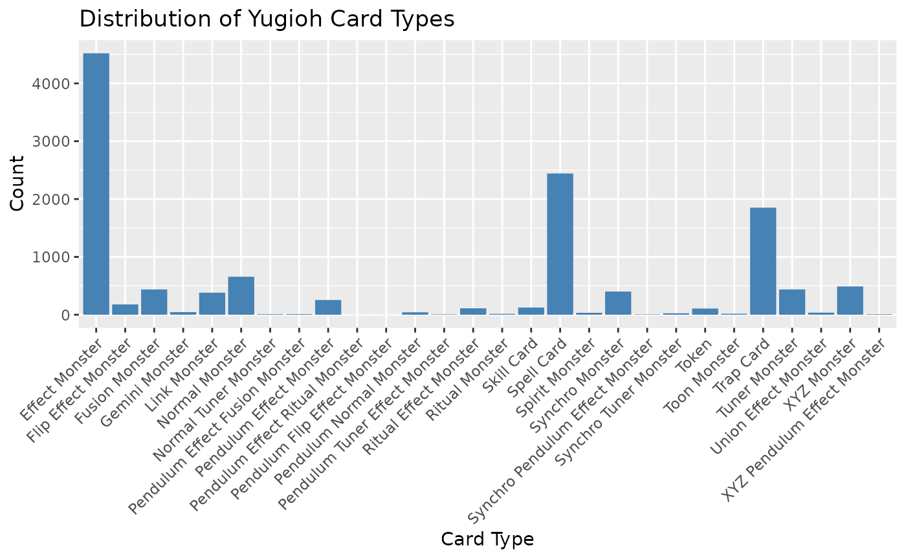
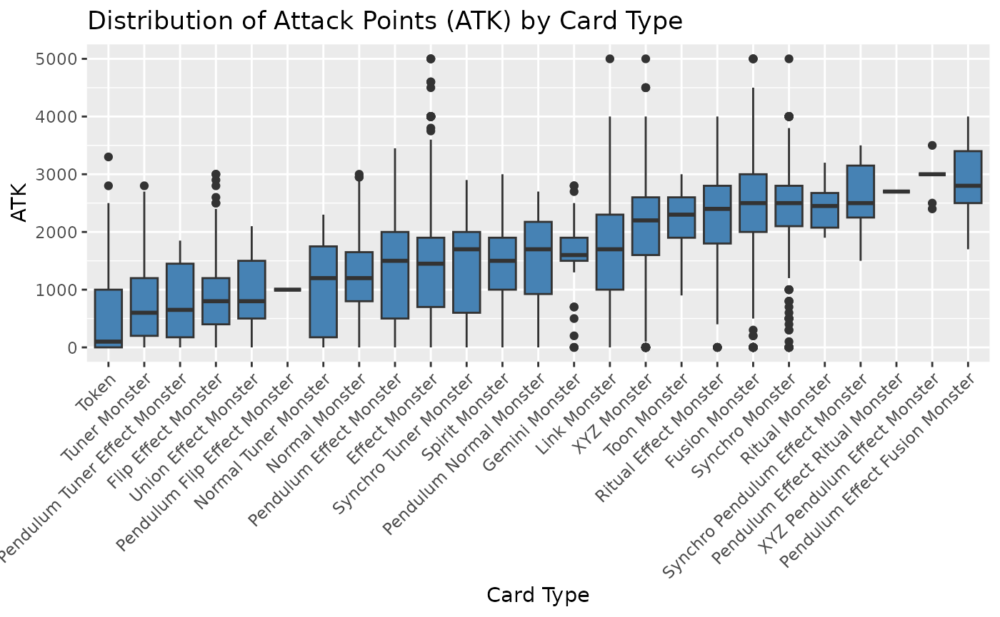

eda.RmdThis vignette provides an exploratory data analysis (EDA) of the
Yu-Gi-Oh card data. EDA helps us understand the dataset and
gain insights into various aspects of the Yu-Gi-Oh
cards.
The Yugioh card dataset used in this analysis contains information about different Yugioh cards, including their types, attributes, attack points (ATK), defense points (DEF), and more. Let’s load the dataset and take a look at its summary statistics:
library(yugioh)
## First check the current version of the database
version <- get_yugioh_database_version()
#> Yugioh Database Version: 96.70
#> Last updated on: 2023-06-24 06:45:06
df <- get_all_yugioh_cards()Let’s start by exploring the distribution of different card types in the dataset.
library(ggplot2)
# Plot the distribution of card types
card_type_counts <- table(df$type)
card_type_counts <- sort(card_type_counts, decreasing = TRUE)
distribution = data.frame(card_type = names(card_type_counts), count = card_type_counts)
ggplot(distribution, aes(x = card_type, y = count.Freq)) +
geom_bar(stat = "identity", fill = "steelblue") +
xlab("Card Type") +
ylab("Count") +
ggtitle("Distribution of Yugioh Card Types") +
theme(axis.text.x = element_text(angle = 45, hjust = 1))
library(ggplot2)
# Filter rows with non-missing ATK values
filtered_df <- df[!is.na(df$atk), ]
# Create a box plot of ATK by card type with rotated x-axis labels
ggplot(filtered_df, aes(x = reorder(type, atk), y = atk)) +
geom_boxplot(fill = "steelblue") +
labs(x = "Card Type", y = "ATK") +
ggtitle("Distribution of Attack Points (ATK) by Card Type") +
theme(axis.text.x = element_text(angle = 45, hjust = 1))